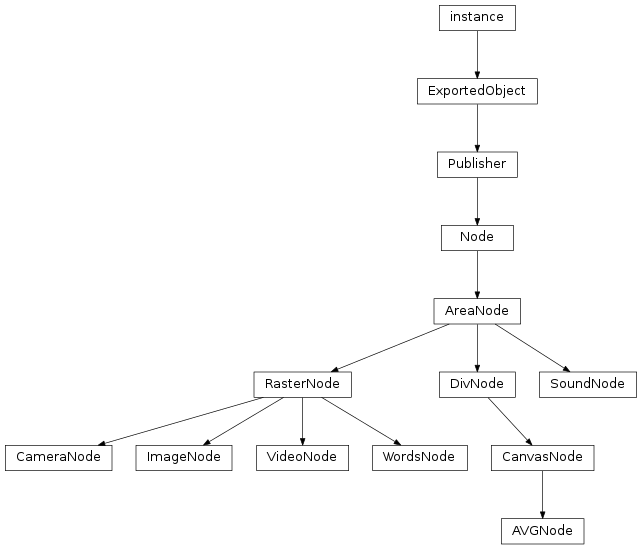

Area Nodes¶

-
class
libavg.avg.AreaNode([x, y, pos, width, height, size, angle, pivot])¶ Bases:
libavg.avg.NodeBase class for elements in the avg tree that define an area on the screen. Responsible for coordinate transformations and event handling. See http://www.libavg.de/wiki/ProgrammersGuide/CoordinateSystems for an explanation of coordinate systems and reference points.
-
getMediaSize() → avg.Point2D¶ Returns the size in pixels of the media in the node. Image nodes return the bitmap size, Camera nodes the size of a camera frame and Words nodes the amount of space the text takes. Video nodes return the video size if decoding has started or (0,0) if not. Decoding starts after
play()orpause()is called and the node can be rendered.
-
x¶ This is the horizontal position of the node’s reference point relative to its parent node.
-
y¶ This is the vertical position of the node’s reference point relative to its parent node.
-
pos¶ This is the position of the node’s reference point relative to its parent node.
-
width¶
-
height¶
-
angle¶ The angle that the node is rotated to in radians. 0 is unchanged, 3.14 is upside-down.
-
size¶ The size that the node takes on the canvas. The default value for
sizeis(0,0), which causes the node to be rendered at media size. DivNodes withsize=(0,0)effectively have infinite size. Note that setting the size to(0,0)also causes this behaviour.
-
pivot¶ The position of the point that the node is rotated around. Default is the center of the node.
-
-
class
libavg.avg.AVGNode¶ Bases:
libavg.avg.CanvasNodeRoot node of an onscreen avg tree. Defines the properties of the display and handles key press events. The AVGNode’s width and height define the coordinate system for the display and are the default for the window size used (i.e. by default, the coordinate system is pixel-based).
-
class
libavg.avg.CameraControl¶ Bases:
Boost.Python.instanceCamera controls are camera configuration parameters like brightness and white balance. A CameraControl object contains information about the supported maximum and minimum values as well as defaults for a specific control.
-
controlName¶ String which tells which control is meant. Read-only.
-
default¶
-
max¶
-
min¶
-
-
class
libavg.avg.CameraImageFormat¶ Bases:
Boost.Python.instanceCameraImageFormat objects contain information about a supported image format of a camera.
-
framerates¶ List of supported frame rates in images per second for that image format as floats. Read-only.
-
size¶ A point which represents the resolution in width and height. Read-only.
-
-
class
libavg.avg.CameraInfo¶ Bases:
Boost.Python.instanceCameraInfo objects contain data about camera capabilities. The data can be used to create create objects of class
CameraNode. The unique value to identify the camera is stored indevice, whereasdrivertells which driver is used to call the camera itself. Information about supported cameracontrolsorimageFormatsare stored in two separate lists.-
controls¶ List of
CameraControlobjects with all possible controls for that camera. Read-only.
-
device¶ String which contains the unique id of the camera. Read-only.
-
driver¶ String which contains the name of the driver. Read-only.
-
imageFormats¶ List of
CameraImageFormatobjects with all possible image formats for that camera. Read-only.
-
-
class
libavg.avg.CameraNode([driver='firewire', device="", unit=-1, fw800=False, framerate=15, capturewidth=640, captureheight=480, pixelformat="RGB", brightness, exposure, sharpness, saturation, camgamma, shutter, gain, strobeduration])¶ Bases:
libavg.avg.RasterNodeA node that displays the image of a camera. An easy way to find the appropriate parameters for your camera is to use avg_showcamera.py.
CameraNodes open the camera device on construction and set the chosen camera parameters immediately.
-
brightness¶
-
camgamma¶
-
device¶ Read-only.
-
driver¶ Read-only.
The number of frames the camera has read since playback started. Read-only.
-
framerate¶ Read-only.
-
gain¶
-
saturation¶
-
sharpness¶
-
shutter¶
-
strobeduration¶
-
doOneShotWhitebalance()¶
-
getBitmap() → Bitmap¶ Returns a copy of the last camera frame.
-
getWhitebalanceU() → int¶
-
getWhitebalanceV() → int¶
-
isAvailable() → bool¶ Returns
Trueif there is a working device that can deliver images attached to the CameraNode.
-
play()¶ Starts reading images from the camera device and displays them. Note that the camera device is opened on construction of the CameraNode.
-
setWhitebalance(u, v)¶
-
stop()¶ Stops camera playback.
-
classmethod
getCamerasInfos()¶ Returns a list of
CameraInfoobjects, one for for each connected camera.
-
classmethod
resetFirewireBus()¶ Frees all allocated bandwidth and devices on the firewire bus. Helpful if a program using a firewire device has crashed leaving resources allocated. Note that all firewire devices (including for instance external hard drives) are affected.
-
-
class
libavg.avg.CanvasNode¶ Bases:
libavg.avg.DivNodeRoot node of a scene graph.
-
class
libavg.avg.DivNode([crop=False, elementoutlinecolor, mediadir])¶ Bases:
libavg.avg.AreaNodeA div node is a node that groups other nodes logically and visually. Its position is used as point of origin for the coordinates of its child nodes. Its extents can be used to clip the children if crop is set to
True. Its opacity is used as base opacity for the child nodes’ opacities. The children of a div node are drawn in the order they are found in the avg file, so the first one is below all others in z-order.-
crop¶ Boolean that turns clipping on or off.
-
elementoutlinecolor¶ Allows debugging of div node nesting by rendering the outlines of this div and all its div children in the specified color (given in html hex format). Turn off by setting the color to the empty string.
-
mediadir¶ Deprecated since version 1.7: Seldom used, error-prone and slow.
The directory that the media files for the children of this node are in. Relative mediadirs are taken to mean subdirectories of the parent node’s mediadir.
-
getNumChildren() → int¶ Returns the number of immediate children that this div contains.
-
getChild(i) → Node¶ Returns the child at index
i.
-
appendChild(node)¶ Adds a new child to the container behind the last existing child.
-
insertChildBefore(newNode, oldChild)¶ Adds a new child to the container before the existing node
oldChild. In z-order, the new child ist behind the old one.
-
insertChildAfter(newNode, oldChild)¶ Adds a new child to the container after the existing node
oldChild. In z-order, the new child ist in front of the old one.
-
insertChild(node, i)¶ Adds a new child to the container at index
i.
-
removeChild(node)¶ Removes the child given by
nodefrom the div. Note that as long as other references to the node exist, the node is not deleted.
-
removeChild(i) Removes the child at index
ifrom the div. Note that as long as other references to the node exist, the node is not deleted.
-
reorderChild(oldIndex, newIndex)¶ Moves the child at
oldIndexso it is atnewIndex. This function can be used to change the order in which the children are drawn.
-
reorderChild(node, newPos) Moves the child
nodeso it is at indexnewPos. This function can be used to change the order in which the children are drawn.
-
indexOf(node)¶ Returns the index of the node given. Throws an exception if
nodeisn’t a child of theDivNode.
-
getEffectiveMediaDir() → string¶ Returns the node’s effective mediadir by traversing the node hierarchy up to the root node.
-
dumpNodeTree([indent=0]) → string¶ Returns a dump of the node hierarchy tree (for debugging purposes).
-
-
class
libavg.avg.ImageNode([href, compression])¶ Bases:
libavg.avg.RasterNodeA static raster image on the screen. The content of an ImageNode can be loaded from a file. It can also come from a
Bitmapobject or from anOffscreenCanvas. Alpha channels of the image files are used as transparency information. Images loaded from a file are cached using theImageCache.-
compression¶ The texture compression used for this image. Currently,
noneandB5G6R5are supported.B5G6R5causes the bitmap to be compressed to 16 bit per pixel on load and is only valid if the source is a filename. Read-only.
-
href¶ In the standard case, this is the source filename of the image. To use a bitmap as source, call setBitmap(). To use an offscreen canvas as source, use the
canvas:protocol:href="canvas:id".
-
getBitmap() → Bitmap¶ Returns a copy of the bitmap that the node contains.
-
setBitmap(bitmap)¶ Sets a bitmap to use as content for the ImageNode. Sets href to an empty string.
-
-
class
libavg.avg.RasterNode([maxtilewidth, maxtileheight, blendmode, mipmap, maskhref, maskpos, masksize, gamma, contrast, intensity])¶ Bases:
libavg.avg.AreaNodeBase class for all nodes that have a direct 2D raster representation. This includes Image, Word, Camera, and Video nodes. The base class implements color controls (
contrast,intensity,gamma), alpha masks (maskhref,maskpos,masksize), several blend modes that define how compositing is done and mipmapping support.Any Raster Node can have a GPU-based effect added to it by using
setEffect().In addition, RasterNodes can be warped. By default, a RasterNode is rectangular. However, it can be subdivided into a grid of reference points using
maxtilewidthandmaxtileheight. The position of each of these points can be changed withgetOrigVertexCoords(),getWarpedVertexCoords()andsetWarpedVertexCoords(), yielding arbitrary shapes.-
blendmode¶ Deprecated since version 1.7: The min and max blend modes will be removed.
The method of compositing the node with the nodes under it. Valid values are
blend,add,minandmax. Forminandmaxblend modes, opacity is ignored.
-
contrast¶ A control for the color contrast of the node. contrast is a triple that contains separate float values for red, green, and blue. A contrast value of 1.0 in all channels leaves the image unchanged.
-
gamma¶ Allows node-specific gamma correction. gamma is a triple that contains separate float values for red, green, and blue. A gamma value of 1.0 in all channels leaves the image unchanged. Higher gamma values increase, lower values decrease the brightness. In all cases, black and white pixels are not affected by gamma. See also http://en.wikipedia.org/wiki/Gamma_correction.
-
intensity¶ A control for the brightness of the node. intensity is a triple that contains separate float values for red, green, and blue. An intensity value of 1.0 in all channels leaves the image unchanged. This value corresponds to the photoshop brightness value.
-
maskhref¶ The source filename for a mask image to be used as alpha channel. Where this file is white, the node is shown. Where it is black, the node is transparent. If the node is an image with an alpha channel, the alpha channel is replaced by the mask.
-
maskpos¶ An offset for the mask image. The offset is given in local node coordinates. Unless
sizeis set, these will correspond to screen pixels. If portions of the node extend outside the mask, the border pixels of the mask are taken.maskposis an offset from the reference point of the node. Usually, this will be the top left corner, but forWordsNodeobjects that havealignmentCenterorRight, the reference point is top center or right, respectively.
-
masksize¶ The size of the mask image. The offset is given in local node coordinates. Unless
sizeis set, these will correspond to screen pixels. If portions of the node extend outside the mask, the border pixels of the mask are taken.
-
maxtileheight¶ The maximum height of the tiles used for warping. The effective tile size is also dependent on hardware and driver limits. Read-only.
-
maxtilewidth¶ The maximum width of the tiles used for warping. The effective tile size is also dependent on hardware and driver limits. Read-only.
-
mipmap¶ Determines whether mipmaps (http://en.wikipedia.org/wiki/Mipmap) are generated for this node. Setting this to
Trueimproves the quality of minified nodes. Depending on the graphics card in use, turning on mipmaps may cause an extreme performance hit for every image change or have no performance cost at all. Read-only.
-
getOrigVertexCoords() → list¶ Returns the unwarped coordinate of all vertices as a list of lists.
-
getWarpedVertexCoords() → list¶ Returns the current coordinate of all vertices as a list of lists.
-
setMaskBitmap(bitmap)¶ Sets a bitmap to use as alpha channel mask. Sets maskhref to an empty string.
-
setMirror(MirrorMode)¶ Flips a node’s image along its vertical or horizontal axis.
MirrorModemust be eitherRasterNode.HORIZONTALorRasterNode.VERTICAL. Internally, this function callssetWarpedVertexCoords().
-
setWarpedVertexCoords(grid)¶ Changes the current coordinates of all vertices.
gridis a list of lists of coordinate tuples.setWarpedVertexCoords()can only be called if the node is in a renderable state. This means thatPlayer.play()must have been called and the node must be inserted in a Canvas. There must also be something to render (for instance,play()must be called beforesetWarpedVertexCoords()in the case of aCameraNode). The grid submitted is lost if the node loses renderable status.
-
-
class
libavg.avg.SoundNode([href, loop=False, volume=1.0])¶ Bases:
libavg.avg.AreaNodeA sound played from a file.
Messages:
To get this message, call
Publisher.subscribe().-
Node.END_OF_FILE()¶ Emitted when the end of the audio stream has been reached.
-
duration¶ The duration of the sound file in milliseconds. Some file formats don’t store valid durations; in this case, 0 is returned. Read-only.
-
href¶ The source filename of the sound.
-
loop¶ Whether to start the sound again when it has ended. Read-only.
-
volume¶ Audio playback volume for this sound. 0 is silence, 1 passes media file volume through unchanged. Values higher than 1 can be used to amplify sound if the sound file doesn’t use the complete dynamic range.
-
getAudioCodec() → string¶ Returns the codec used as a string such as
"mp2".
-
getAudioSampleRate() → int¶ Returns the sample rate in samples per second (for example, 44100).
-
getCurTime() → time¶ Returns milliseconds of playback time since audio start.
-
getNumAudioChannels() → int¶ Returns the number of channels. 2 for stereo, etc.
-
pause()¶ Stops audio playback but doesn’t close the object. The playback cursor stays at the same position.
-
play()¶ Starts audio playback.
-
seekToTime(time)¶ Moves the playback cursor to the time given in milliseconds.
-
setEOFCallback(pyfunc)¶ Deprecated since version 1.8: Use the message interface instead.
Sets a python callable to be invoked when the audio reaches end of file.
-
stop()¶ Stops audio playback. Closes the object and ‘rewinds’ the playback cursor.
-
-
class
libavg.avg.VideoNode([href, loop=False, threaded=True, fps, queuelength=8, volume=1.0, enablesound=True])¶ Bases:
libavg.avg.RasterNodeVideo nodes display a video file. Video formats and codecs supported are all formats that ffmpeg/libavcodec supports. Usage is described thoroughly in the libavg wiki: https://www.libavg.de/wiki/ProgrammersGuide/VideoNode.
Messages:
To get this message, call
Publisher.subscribe().-
Node.END_OF_FILE()¶ Emitted when the end of the video stream has been reached.
-
enablesound¶ On construction, set to
Trueif any audio present in the video file should be played back as well. A value ofFalseignores audio and just plays a silent video.
-
fps¶ The nominal frames per second the object should display at. Read-only.
-
href¶ The source filename of the video.
-
loop¶ Whether to start the video again when it has ended. Read-only.
-
queuelength¶ The length of the decoder queue in video frames. This is the number of frames that can be decoded before the first one is displayed. A higher number increases memory consumption but also resilience against data source latency (i.e. hiccups during disk reads). Can only be set at node construction. Can’t be set if
threaded=False, since there is no queue in that case.
-
threaded¶ Whether to use separate threads to decode the video. The default is
True. Setting this attribute toFalsemakes seeking much quicker. On the other hand, it also disables audio and prevents libavg from distributing the CPU load over several cores of a multi-core computer.
-
volume¶ Audio playback volume for this video. 0 is silence, 1 passes media file volume through unchanged. Values higher than 1 can be used to amplify sound if the sound file doesn’t use the complete dynamic range. If there is no audio track, volume is ignored.
-
getAudioCodec() → string¶ Returns the audio codec used as a string such as
mp2.
-
getAudioSampleRate() → int¶ Returns the sample rate in samples per second (for example, 44100).
-
getBitrate() → int¶ Returns the number of bits in the file per second.
-
getContainerFormat() → string¶ Returns the video file format. This is a string such as
aviormpeg.
-
getCurFrame() → int¶ Returns the index of the video frame currently playing.
-
getCurTime() → long¶ Returns milliseconds of playback time since video start.
-
getDuration() → int¶ Returns the duration of the video in milliseconds. Some file formats don’t store valid durations; in this case, 0 is returned. Read-only.
-
getNumFrames() → int¶ Returns the number of frames in the video.
-
getNumAudioChannels() → int¶ Returns the number of audio channels. 2 for stereo, etc.
-
getNumFramesQueued() → int¶ Returns the number of frames already decoded and waiting for playback.
-
getStreamPixelFormat() → string¶ Returns the pixel format of the video file as a string. Possible pixel formats are described in http://ffmpeg.mplayerhq.hu/doxygen/trunk/pixfmt_8h.html#60883d4958a60b91661e97027a85072a
-
getVideoCodec() → string¶ Returns the video codec used as a string such as
mpeg4.
-
hasAlpha() → bool¶ Returns
Trueif the video contains an alpha (transparency) channel. Throws an exception if the video has not been opened yet.
-
hasAudio() → bool¶ Returns
Trueif the video contains an audio stream. Throws an exception if the video has not been opened yet.
-
isSeeking() → bool¶ Returns
Trueif a seek is currently pending, i.e. ifseekToFrame()orseekToTime()has been called and the destination frame has not been displayed.
-
pause()¶ Stops video playback but doesn’t close the object. The playback cursor stays at the same position and the decoder queues remain full.
-
play()¶ Starts video playback.
-
seekToFrame(num)¶ Moves the playback cursor to the frame given.
-
seekToTime(millisecs)¶ Moves the playback cursor to the time given.
-
setEOFCallback(pyfunc)¶ Deprecated since version 1.8: Use the message interface instead.
Sets a python callable to be invoked when the video reaches end of file.
-
stop()¶ Stops video playback. Closes the file, ‘rewinds’ the playback cursor and clears the decoder queues.
-
-
class
libavg.avg.WordsNode([fontstyle=None, font="sans", variant="", text="", color="FFFFFF", fontsize=15, indent=0, linespacing=-1, alignment="left", wrapmode="word", justify=False, rawtextmode=False, letterspacing=0, aagamma=1, hint=True])¶ Bases:
libavg.avg.RasterNodeA words node displays formatted text. All properties are set in pixels. International and multi-byte character sets are fully supported. Words nodes use UTF-8 to encode international characters (use python unicode strings for this).
The pos attribute of a words node is the logical top left of the first character for left-aligned text. For centered and right-aligned text, it is the top center and right of the first line, respectively. For latin text, the logical top usually corresponds to the height of the ascender. There may be cases where portions of the text are rendered to the left of or above the logical position, for instance when italics are used.
Words nodes are rendered using pango internally.
-
alignment¶ The paragraph alignment. Possible values are
left,centerandright.
-
aagamma¶ Defines a gamma-correction value for the alpha (transparency) of the text rendered. Using this attibute, it is possible to fine-tune the text antialiasing and make sure rendering is smooth.
-
font¶ The family name of the truetype font to use. Font files can either be installed in the system, be in a
fonts/subdirectory of the current directory, or be in a directory specified usingaddFontDir(). To figure out which fonts and variants are available, use the avg_showfonts.py utility.
-
fontsize¶ The font size in pixels. Fractional sizes are supported.
-
fontstyle¶ A
FontStyleobject that encapsulates all font attributes of the node. As a constructor parameter, this attribute sets the default attributes and other constructor arguments can override these. If set duringWordsNodeuse, all relevant attributes are set to the new values.
-
hint¶ Whether or not hinting (http://en.wikipedia.org/wiki/Font_hinting) should be used when rendering the text. Unfortunately, this setting does not override the fontconfig settings in
/etc/fonts/conf.d/*-hinting.confor other fontconfig configuration files.
-
indent¶ The indentation of the first line of the text.
-
justify¶ Whether each complete line should be stretched to fill the entire width of the layout. Default is false.
-
letterspacing¶ The amount of space between the idividual glyphs of the text in pixels, with 0 being standard spacing and negative values indicating packed text (less letter spacing than normal). Only active when text attribute markup is not being used.
-
linespacing¶ The number of pixels between different lines of a paragraph. Setting this to
-1results in default line spacing.
-
rawtextmode¶ Sets whether the text should be parsed to apply markup (
False, default) or interpreted as raw string (True).
-
text¶ The string to display. The string can be formatted using the pango text attribute markup language described at http://developer.gnome.org/pango/unstable/PangoMarkupFormat.html. In addition, the
<br/>tag is supported for paragraph breaks.Markup parsing can be turned on or off with
rawtextmodeattribute.
-
variant¶ The variant (
bold,italic, etc.) of the font to use.
-
wrapmode¶ Controls at which points text can wrap to the next line. Possible values are
word(split lines at the nearest whitespace, default),char(split at any position, ignoring word breaks) andwordchar(split at word boundaries but fall back to char mode if there is no free space for a full word).
-
getCharIndexFromPos(pos) → int¶ Returns the index of the character at the coordinates
pos, orNoneif there is no character at that position.posis relative to the node position. Formatting markup such as <b> or <i> is treated as zero chars, <br/> is treated as one char. To get the text matched to this usegetTextAsDisplayed().
-
getGlyphPos(i) → Point2D¶ Returns the position of the glyph at character index
iin the layout. The position is in pixels relative to the words node. Formatting markup such as <b> or <i> is treated as zero chars, <br/> is treated as one char.
-
getGlyphSize(i) → Point2D¶ Returns the size in pixels of the glyph at character index
iin the layout. Formatting markup such as <b> or <i> is treated as zero chars, <br/> is treated as one char.
-
getLineExtents(line) → Point2D¶ Returns the width and height of the specified line in pixels.
-
getNumLines() → int¶ Returns the number of lines in the layout.
-
getTextAsDisplayed()¶ Returns the text without text attribute markup language. <br/> is replaced by \n.
-
classmethod
addFontDir()¶ Adds a directory to be searched for fonts. May only be called before
Player.play().
-
classmethod
getFontFamilies() → list¶ Returns a list of strings containing all font names available.
-
classmethod
getFontVariants(fontname) → list¶ Returns a list of available variants (
Regular,Bold, etc.) of a font.
-